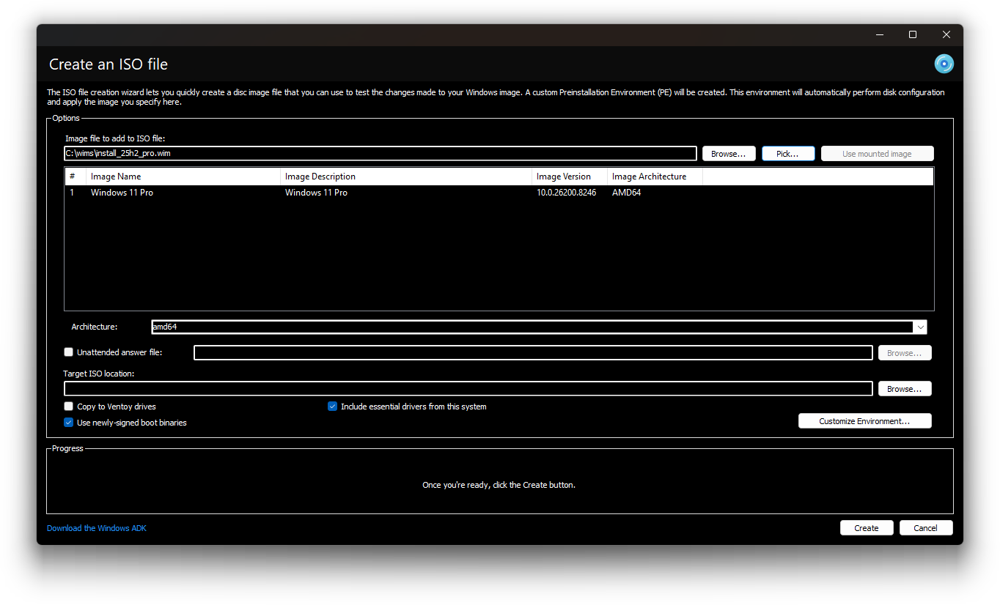
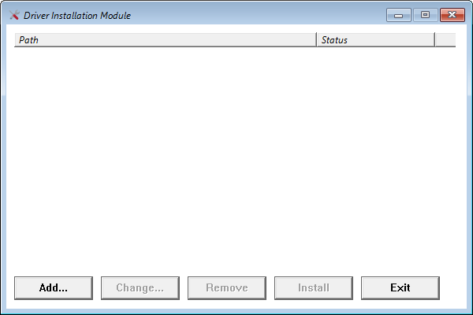
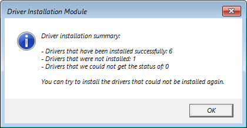
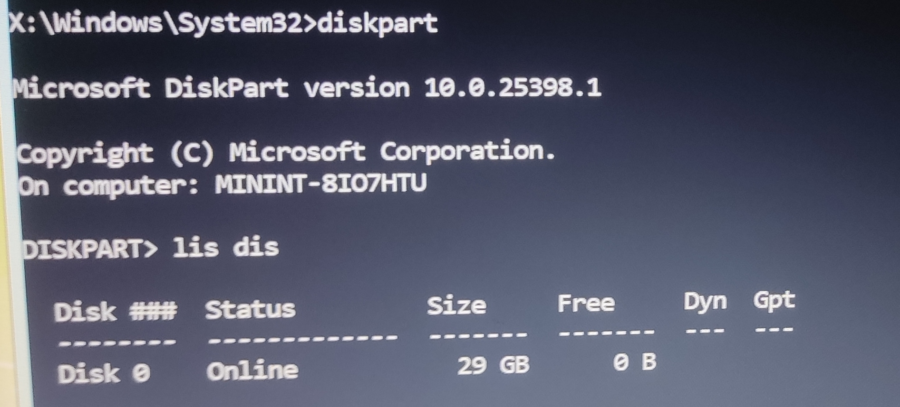
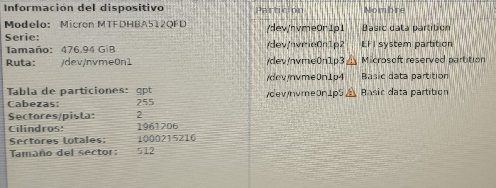
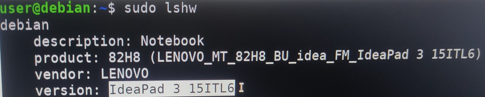
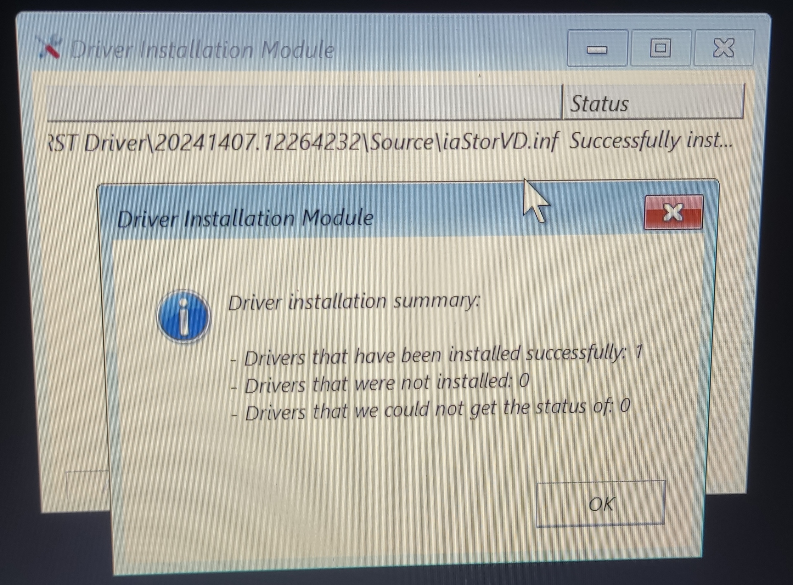
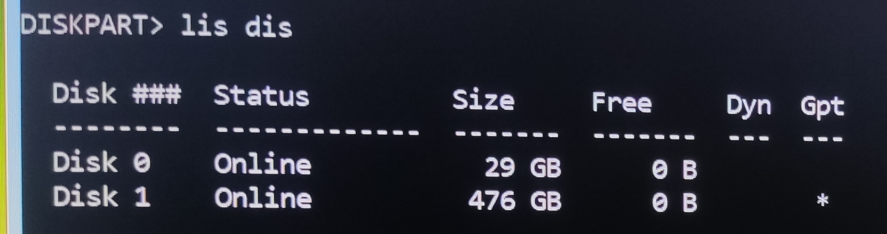

Testing your Windows images with the ISO creation tools

If you want to test the changes made to a Windows image, you can easily do so with the ISO creation tools, which include the ISO creator and the Preinstallation Environment (PE) Helper.
You will need the Windows Assessment and Deployment Kit (ADK), which you can download using the convenient link on the bottom left.
This tool is available in DISMTools 0.5 and later.
Usage
To create a new ISO file, do the following:
- Pick your Windows image. You can either browse through your computer for a Windows image to copy, pick an image from the pop-up mounted image picker, or pick the currently loaded one. Once you pick a Windows image, you will see information about each index in the image
- Choose the architecture for the Preinstallation Environment by using the architecture list. It is recommended to pick the one that the image supports
- (Optional, new in DISMTools 0.5.1) Choose an unattended answer file to apply
- Choose the target location of the ISO file. If the target image exists, you will be asked if you want to replace it when clicking Create
With DISMTools 0.6.1 and later, you can also specify 2 options:
- Copy to Ventoy drives lets you take advantage of your Ventoy drives for operating system installation. After the ISO is generated, it will be copied automatically to all Ventoy drives you have plugged into your computer
- Use newly-signed boot binaries will make the ISO files that you create ship with EFI boot binaries signed with the Windows UEFI CA 2023 code-signing certificate. This is not checked by default because of reasons that are mentioned later in this document
This process can take between 5 to 10 minutes, depending on the size of the Windows image and the speed of your computer's disk drive.
Starting installation
You can start the installation of your operating system in 2 ways:
- By booting to installation media, or
- By starting the installation from within a full Windows environment (DISMTools 0.6.1 and later)
Starting from a full Windows environment
DISMTools 0.6.1 and later come with a program that prepares your computer for OS installation. This is called HotInstall, and the process of computer preparation is as follows:
NOTE: HotInstall does not support Ventoy drives, due to the way they work
-
Start
setup.exein the root of the DVD or USB drive. If you see a notification when inserting the installation media, you can also click on it to start the installer, effectively taking advantage of AutoRun:
-
Accept the disclaimers and click Next:

-
Review that the ISO file contains the installation image you want to test, and click Next. On this screen, you can also export all your third-party drivers to a folder, in case you need them later:

-
Wait for your computer to be prepared for installation. This process will take some time, depending on your computer's performance:

After restarting your computer, choose "DISMTools Operating System Installation" (if it is not selected by default) and press Enter. The first stage of the installation will start:

Continuing the installation
Whether you've started the installation with HotInstall or by booting to installation media, the installation process will be the same. The Preinstallation Environment Helper will guide you through the installation process, which includes:
- Selecting the disk and partition where the operating system will be installed
- Choosing the index of the Windows image to apply
- Applying the Windows image
- Running serviceability tests
- Creating boot files
- Rebooting your system
Let's go over these steps in more detail:
Selecting the disk and partition
The PE Helper will get the disks that are available on your computer:

On this screen, you can also stop for a moment to take actions if something does not look right with the disk listing, or if you want to see what disks have enough free space for the installation of your Windows image:
- If you don't see the disk you want to use, it could be because your computer uses a third-party disk controller. If that is the case, type
DIMand press Enter to open the Driver Installation Module. More information on how to use this tool can be found later in this document - (Only for installations started with HotInstall) If you want to see the free space on your disks, type
DSCRand press Enter. This will show you the Disk Space Checker report generated by HotInstall:

After selecting the disk, you will be asked to select the partition where the operating system will be installed. You can choose to clean all the partitions of your disk, or you can choose to format a specific partition:

IMPORTANT: all actions past this point are irreversible. Make sure that you have backed up your data, and that you have selected the correct disk, before proceeding.
Choosing the index of the Windows image
After selecting the disk and partition, you will be asked to choose the index of the Windows image that you want to apply. The PE Helper will show you basic index information, including the name you have given to the image:

You can also see a bit more information about the image by typing INFO and pressing Enter:

After choosing the index, the PE Helper will apply the image to the selected disk or partition, will run serviceability tests, and will create boot files.
After everything is done, your computer will restart automatically in 10 seconds:

From this point, you can remove the installation media and let your computer finish operating system configuration.
Windows UEFI CA 2023 information
The Windows UEFI CA 2023 certificate is now used to sign new EFI boot binaries. This is present in versions 10.1.26100.2454 and later of the Windows ADK as an option for ISO file creation.
Some computers may not boot correctly using these new EFI boot binaries, and compatibility may depend on whether or not a device that uses UEFI contains this certificate. You can check if your computer contains this certificate by running the following PowerShell command as an administrator:
[System.Text.Encoding]::ASCII.GetString((Get-SecureBootUEFI db).bytes) -match 'Windows UEFI CA 2023'
If the command returns True, your computer has this certificate. Otherwise, you may need updates to add support for this certificate. If you have doubts regarding the compatibility of your computer with this certificate, it is recommended to leave the option unchecked.
MBR systems are not affected by this change.
You can learn more here: Revoking vulnerable Windows boot managers
Driver Installation Module
The Driver Installation Module (DIM) is a quick and easy way of adding device drivers to booted Windows Preinstallation Environments:

While full functionality is achieved with the DISMTools Preinstallation Environment, you can still use the DIM in every Preinstallation Environment. Do note, however, that this is only compatible with the 32-bit and 64-bit desktop architectures (x86 and amd64).
Usage
-
Click the "Add" button and choose between a single driver file or an entire folder
- If you choose a folder, the Driver Installation Module will perform a recursive scan for INF files. This may pick up invalid INF files you may have
-
Perform any changes with the "Edit" and "Remove" buttons
- Click the "Install" button and let the program add the drivers
After driver installation, you will see an installation summary:

Later, after applying your Windows image, the Preinstallation Environment Helper will add those drivers to the target image.
Practical use: computers with third-party disk controllers
A practical use of the Driver Installation Module is to add compatibility for disk controllers that are not shipped with Windows PEs by default. This is the case if the test system is relatively new.

Here's how you can proceed:
-
Boot to a live Linux environment and use the partition manager that may come with it to grab the model of the desired drive. If you don't have a Linux ISO available, we recommend GParted Live for its simplicity and its small size

-
Additionally, you may want to get information about the model of the computer. In most Linux systems, you can run
sudo lshwin the terminal
After getting the model of the computer, go to the computer manufacturer's website to download compatible drivers. Make sure that you extract them and that you DON'T install them to your system by accident. After that, copy the drivers to wherever you want
-
Open the Driver Installation Module, add the folder containing the drivers and click Install

-
Check disks once again

Serviceability tests
Serviceability tests are performed during OS installation to make sure that the image that has been applied is valid. They are only run if the architectures of the PE and the image are the same, and must pass in order to successfully complete the installation of the operating system.
If these tests fail, you may need to repair the component store of your Windows image.
Extensibility Suite
The Extensibility Suite lets you expand the DISMTools Preinstallation Environment even further by letting you modify its functionality and add applications. You can add to the Preinstallation Environment applications that you may find useful, or applications that you have worked on.
This task is available in DISMTools 0.5.1 and later.
Usage
- Go to Tools > Create a testing environment...
- Specify the architecture and target location
- Click Create
Then, you can look at the README file in the target directory to learn more.
Remarks
- Please make sure to commit your unsaved changes to your image before creating the ISO file